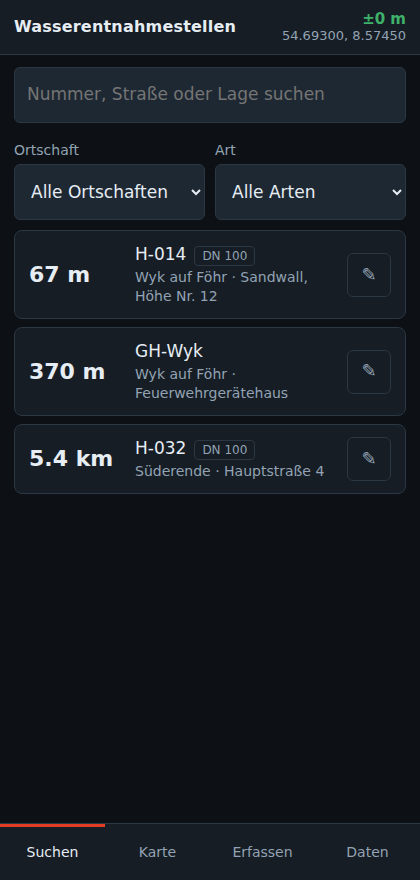
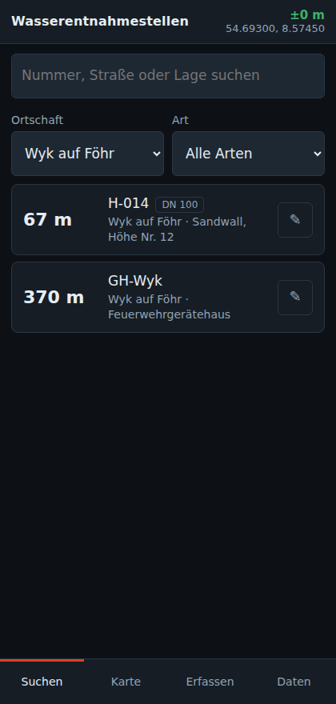
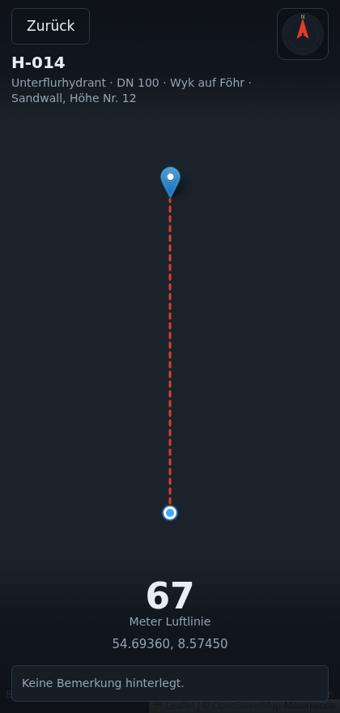
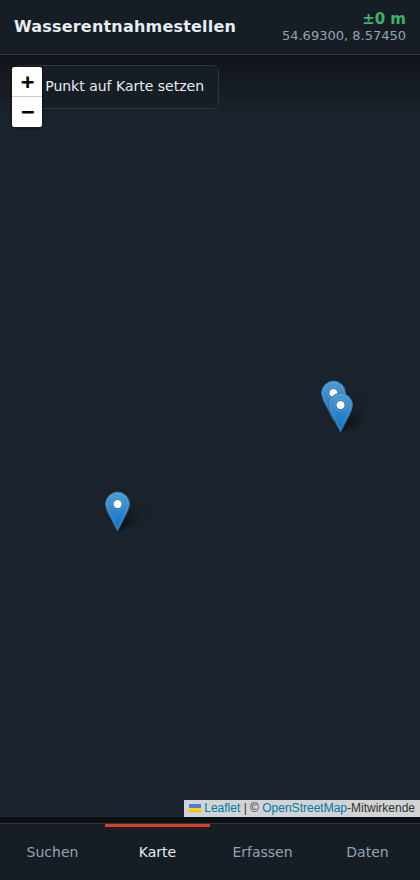
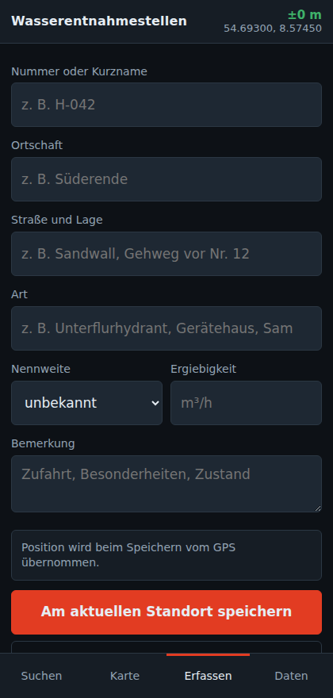
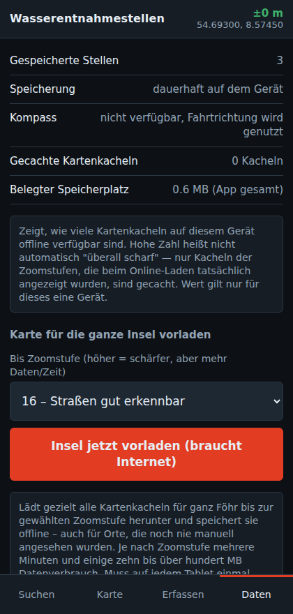

App einmalig einrichten (pro Tablet)
Auf jedem Fahrzeug-Tablet einmal, solange WLAN/Internet vorhanden ist:
joergroeloffs-coder.github.io/wasserentnahme-test2. Im Browser-Menü „Zum Startbildschirm hinzufügen“ wählen
3. Kurz die Karte in ein paar Ortschaften ansehen und heranzoomen (das lädt die Kartenbilder herunter, damit sie später ohne Internet scharf sind) – oder unter „Daten“ die Insel in einem Schritt vorladen (siehe Schritt 5)
Danach funktioniert die App komplett ohne Internet im Fahrzeug.
Stelle suchen
Im Reiter „Suchen“ erscheinen alle Stellen, sortiert nach Entfernung zum eigenen Standort. Mit dem Suchfeld nach Nummer, Straße oder Ort suchen, oder über die zwei Filter gezielt nach Ortschaft und Art einschränken (z. B. „alle Überflurhydranten in Süderende“).


Zur Stelle navigieren
Auf einen Eintrag in der Liste tippen. Es öffnet sich die Navigationsansicht mit Karte, eigener Position (blauer Punkt) und Ziel (roter Marker). Der Kompasspfeil oben rechts zeigt zusätzlich grob die Richtung. Bildschirm antippen zeigt kurz Details (Entfernung, Bemerkung) – „Zurück“ oben links führt zur Liste zurück.

Alle Stellen auf der Karte ansehen
Reiter „Karte“ zeigt alle erfassten Stellen auf einer normalen Karte. Antippen eines Markers öffnet direkt die Navigation zu diesem Punkt.

Neue Stelle erfassen (nur für Zuständige)
Reiter „Erfassen“: Nummer, Ortschaft, Straße/Lage und Art eintragen (Art ist frei wählbar, z. B. auch „Gerätehaus“ oder „Sammelplatz“). Position kommt automatisch vom GPS, alternativ „Position auf Karte antippen“ oder von Hand eingeben.

Einen bestehenden Punkt ändern: in der Liste auf das Stift-Symbol tippen. Löschen geht dort im geöffneten Formular über „Diesen Punkt löschen“.
Daten sichern, verteilen, Karte vorladen
Reiter „Daten“ – die wichtigsten Punkte:
